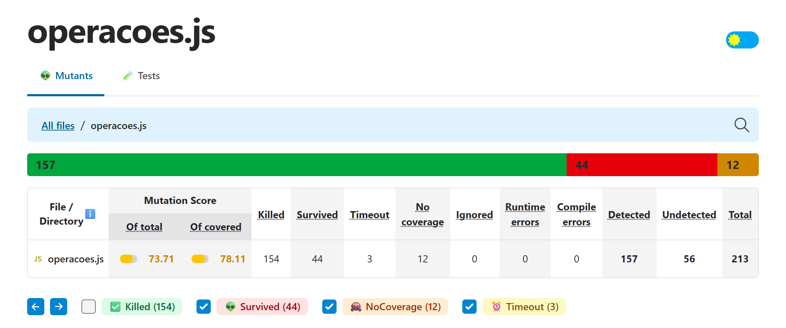
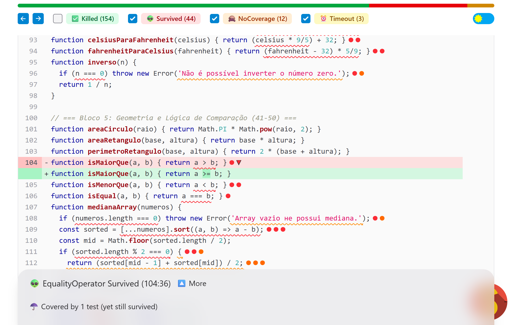
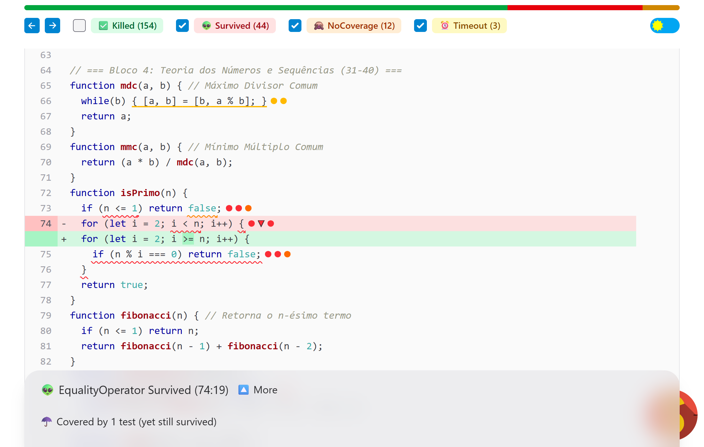
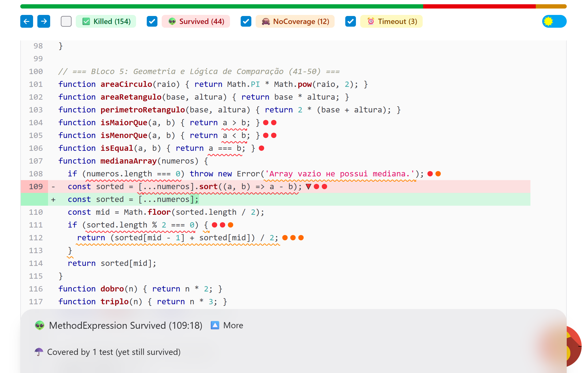
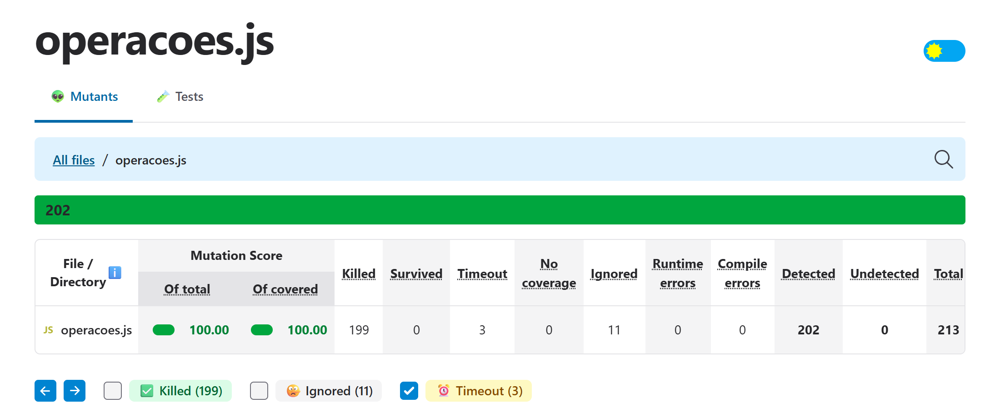

O projeto é uma biblioteca com 50 funções matemáticas (src/operacoes.js) e uma suíte Jest com 50 testes, um por função (test/operacoes.test.js). Após npm install, todos os testes passaram. O relatório de cobertura (npm test -- --coverage) e a primeira execução do StrykerJS 10 (npx stryker run, configurado em stryker.conf.json com o jest-runner e coverageAnalysis: "perTest") produziram os seguintes números:
| Métrica (suíte original) | Statements | Branches | Functions | Lines | Mutation score |
|---|---|---|---|---|---|
| Valor | 85,41% | 58,82% | 100% | 98,64% | 73,71% |

Discrepância. Todas as funções e 98,64% das linhas são executadas pelos testes, mas mais de um quarto dos mutantes (56 de 213) não é detectado. A cobertura apenas indica que o código rodou; ela não mede se as asserções verificam o comportamento. A suíte original testa, para cada função, um único “caminho feliz”: não há casos de borda (igualdade, zero, limites), nem entradas que produzam o resultado oposto (ex.: um número não primo), nem verificação das mensagens de erro. Assim, operadores trocados, condições substituídas por true/false e mensagens apagadas passam despercebidos. A cobertura de branches (58,82%) já dava uma pista, mas mesmo ela ignora a qualidade das asserções.
isMaiorQue – EqualityOperator a > b → a >= b (linha 104)
isMaiorQue, coberto por 1 teste.O que a mutação fez: trocou o operador relacional estrito por não estrito. Por que sobreviveu: o único teste é isMaiorQue(10, 5) === true. Para 10 e 5, > e >= dão o mesmo resultado; a diferença só aparece na fronteira a === b, que nunca é testada. O mesmo padrão afetou isMenorQue (< → <=) e as variantes return true de ambas e de isEqual, pois nenhum teste espera false.
isPrimo – EqualityOperator i < n → i >= n (linha 74)
isPrimo.O que a mutação fez: inverteu a condição de parada do laço. Com i = 2 e n ≥ 3, 2 >= n é falso e o laço nunca executa: a função passa a responder true para qualquer n > 1. Por que sobreviveu: o único teste é isPrimo(7) === true; como 7 é primo, a função mutada acerta “por acaso”. Sem um número composto na suíte, o teste não exercita o caminho que retorna false dentro do laço. Pelo mesmo motivo sobreviveram a remoção do corpo do laço, n % i → n * i e n <= 1 → n < 1 (falta testar isPrimo(1)).
medianaArray – MethodExpression: remoção do .sort() (linha 109)
O que a mutação fez: removeu a ordenação, de modo que a mediana passa a ser o elemento central do array na ordem recebida. Por que sobreviveu: o teste usa [1, 2, 3, 4, 5], que já está ordenado e tem tamanho ímpar. Ordenar ou não dá o mesmo resultado, e por isso também sobreviveram o comparador a + b e () => undefined. Como não há array de tamanho par, o ramo (sorted[mid - 1] + sorted[mid]) / 2 nunca é executado (é a única linha descoberta) e seus mutantes ficaram como NoCoverage.
Os 50 testes originais foram mantidos e acrescentou-se um bloco describe('Testes adicionais para matar mutantes sobreviventes') com 33 novos testes, organizados pelos mesmos blocos do código-fonte. Os testes que matam os mutantes analisados são:
isMaiorQue(5, 5) e isMaiorQue(5, 10) devem ser false; idem para isMenorQue(5, 5)/(10, 5) e isEqual(7, 8). O caso de igualdade é exatamente o ponto em que > e >= divergem, e os casos falsos matam as mutações return true.isPrimo(4), (9) e (15) devem ser false; isPrimo(1), (0) e (-7) devem ser false; isPrimo(2) deve ser true. Números compostos obrigam o laço a executar e a encontrar um divisor, o que falha com i >= n, com o corpo removido ou com n * i. O valor 1 testa a fronteira de n <= 1.medianaArray([5, 1, 3]) === 3 (ímpar e desordenado, mata a remoção do sort e os comparadores inválidos), [4, 1, 3, 2] === 2.5 e [10, 20, 30, 50] === 25 (tamanho par: cobre o ramo antes ignorado e distingue / 2, mid - 1 e +), além de um teste garantindo que o array de entrada não é alterado.Os demais sobreviventes foram eliminados com o mesmo raciocínio de fronteiras e resultados opostos: raizQuadrada(0) e fatorial(0) (fronteira de n < 0); clamp(-5, 0, 10) e clamp(15, 0, 10) (ramos de mínimo e máximo); isPar(7), isImpar(4) e isDivisivel(10, 3) esperando false; mediaArray([]) e arrays vazios em máximo, mínimo e mediana; conversões com 100 °C ↔ 212 °F (o valor 0 °C anula a multiplicação e escondia trocas de * por /); e toThrow('mensagem exata') em todas as validações, que mata os mutantes StringLiteral que esvaziavam as mensagens de erro.
Mutantes equivalentes. Sete sobreviventes não podem ser mortos por nenhum teste, pois não alteram o comportamento observável: (i) em fatorial, o atalho if (n === 0 || n === 1) return 1 (4 mutantes), porque o laço for (i = 2; i <= n; …) já devolve 1 nesses casos; (ii) em produtoArray, if (numeros.length === 0) return 1 → if (false), porque reduce com valor inicial 1 também devolve 1; (iii) em clamp, < → <= e > → >=, porque quando valor === min retornar min ou valor é a mesma coisa. Eles foram marcados no código com o comentário oficial do Stryker // Stryker disable next-line <mutador>: justificativa, que apenas os exclui do cálculo (status Ignored) sem mudar o código executado. A diretiva atua por linha e mutador, por isso 4 mutantes já mortos nessas mesmas linhas também passaram a constar como ignorados (11 no total).
| Métrica | Inicial | Final |
|---|---|---|
| Testes | 50 | 83 |
| Cobertura (statements / branches / functions / lines) | 85,41 / 58,82 / 100 / 98,64% | 100 / 100 / 100 / 100% |
| Mutantes detectados (mortos + timeout) | 157 | 202 |
| Sobreviventes / sem cobertura | 44 / 12 | 0 / 0 |
| Mutation score sem ignorar equivalentes (206/213) | 73,71% | 96,71% |
| Mutation score final (equivalentes ignorados) | 73,71% | 100,00% |

Mesmo contando os 7 mutantes equivalentes como sobreviventes, a nova suíte mata todos os mutantes que podem ser mortos (96,71%, o máximo teoricamente possível para esse código). Com os equivalentes excluídos, o score atinge 100%, superando a meta de 98%.
O trabalho mostrou que uma suíte com 100% de cobertura de funções e quase 100% de linhas podia deixar passar mais de um quarto dos defeitos introduzidos. A cobertura responde “o código foi executado?”; o teste de mutação responde “os testes perceberiam se o código estivesse errado?”. Cada mutante sobrevivente apontou de forma concreta uma asserção ausente: uma fronteira não testada, um resultado false nunca verificado, um dado de entrada que mascarava o erro (array já ordenado, número primo, 0 °C). Também ficou claro que o score precisa ser interpretado com senso crítico, pois mutantes equivalentes existem e devem ser identificados e justificados, não “mortos” com testes artificiais. O custo do teste de mutação é maior que o da cobertura, mas, como métrica de qualidade de testes, ele é muito mais confiável e orienta diretamente quais testes escrever.